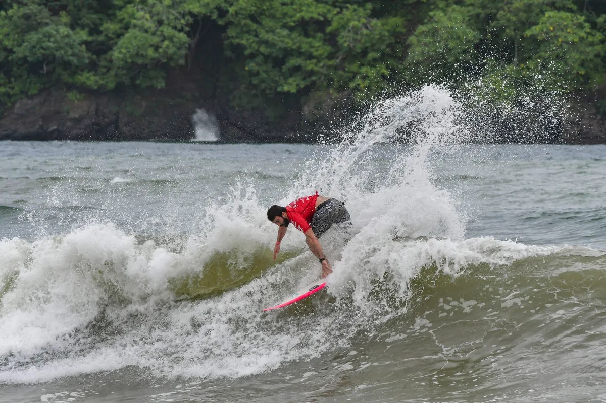
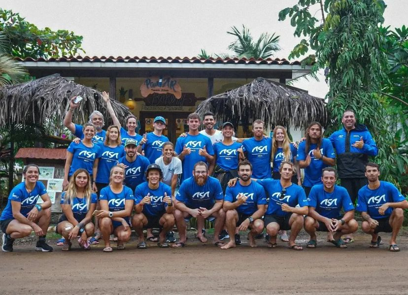
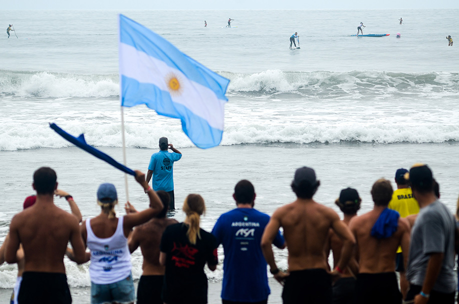

Juegos Panamericanos 2022

Fui llamado para formar parte del Seleccionado Argentino finales del año 2021, para despues ser convocado a representar la bandera participando de los Juegos Panamericanos de Surf en Playa Venao, Panama. Con una buena performance durante todo el evento, consegui llegar hasta Semifinales, quedando en la 7ma posicion del torneo.

